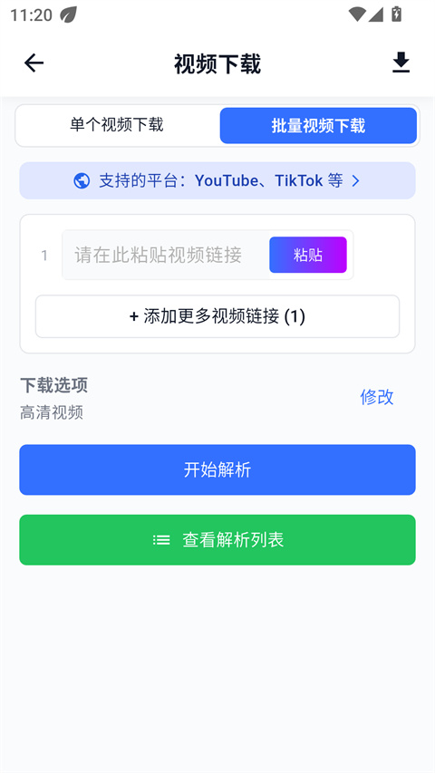
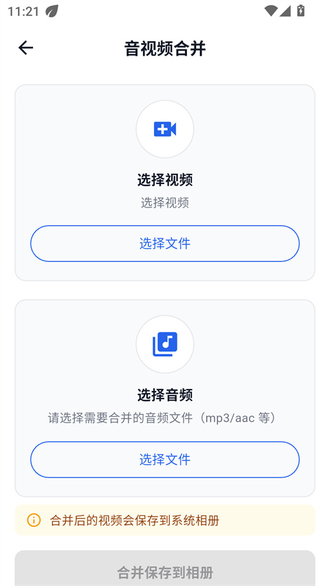

DataTool 视频素材处理实战：从下载到后处理一条龙
从零把 DataTool 用起来——视频下载、字幕提取、工具箱后处理三步走完，把链接变成可用素材。
这篇教程走完，你能把一个视频链接变成可直接用的素材——干净画面、带字幕、体积合适。全程在手机上就能完成，不需要电脑。
准备工作
DataTool 的官网 提供安卓 App、Windows/Mac 桌面客户端、网页版三个端，安装包从官方下载拿。本教程以安卓端为主，桌面端操作逻辑一致，下载目录可以自己指定。安卓端常见分发版本是 v1.2.3，包名 com.bwx.datatool，体积约 250MB。
装好之后先登录，邮箱账号全端通用。然后进入设置把保存位置确认一下——安卓端默认进系统相册，桌面端记得指到素材盘，别让 C 盘背锅。
第一步：拿到干净画面
打开 App 首页，你会看到两个下载入口：单个视频和批量下载。
单个下载就是粘贴一条链接点解析，等几秒拿到无水印画面。画质档位覆盖 1080P 到 4K，具体能拿多高取决于源视频本身。拿到解析结果后点下载，任务会进入列表排队。
批量下载适合一次处理多条素材，比如一口气下完一个合集或播放列表。把多条链接逐行粘贴进去，DataTool 会逐条解析、逐条下载，全程不需要盯着。批量任务在桌面端跑更舒服，长任务不依赖浏览器状态。

下载完别急着关 App，确认任务列表里显示完成再走。找不到文件的时候，安卓端打开系统相册按时间排序，最新一条就是刚下的；桌面端按你设置的目录去找；网页版按 Ctrl + J 打开浏览器下载列表看路径。
第二步：把字幕也拿下来
光有画面还不够，字幕是素材的灵魂。DataTool 给了两条路线，看素材本身带不带字幕轨。
有字幕轨的——比如 YouTube、BiliBili、TikTok 这类平台的视频本身带字幕轨，直接走字幕提取功能就能把文字拉下来。这是最理想的情况，拿到的字幕干净、准确。
没有字幕轨的——口播、访谈、纯教程类视频，走 AI 识别字幕让机器转写。AI 转写有每日免费额度，够日常用，批量跑得多的时候注意一下额度。
两种方式拿到的字幕可以导出成文本稿，后续做剪辑、写文案都方便。
第三步：工具箱后处理
下载完画面、拿到字幕，素材还可能需要动一动——DataTool 把这些活儿都收进了工具箱，五个小工具各司其职，更完整的参数和用法细节可以翻DataTool文档：
- 音视频合并：分轨素材合成，比如画面轨加字幕轨合成带字幕的成片。
- 提取音频：只要声音不要画面，适合做播客素材或二次配音。
- 视频压缩：大文件瘦身，不牺牲清晰度的前提下显著减小体积。
- 视频镜像：左右翻转画面。前置摄像头录的内容经常左右颠倒，翻转一次恢复正常视角；健身、舞蹈教学视频翻转后教练的动作方向与你就地同步，跟练不用脑内转换。
- 视频缩放：不同平台吃不同画幅，竖屏平台、横屏长视频、方形预览图各有所好，缩放工具把已有素材调成目标尺寸，省去重拍或开剪辑软件的周折。

工具箱的处理产物都是新文件，原片不动。重要素材处理前先备份一份，养成习惯比事后后悔强。
三个新手最容易翻车的卡点
卡点一：下载完找不到文件。这是高频问题。安卓端默认进相册，别在文件夹里瞎翻，打开相册按时间排序拉到最上面就行。相册里没有就去文件管理的下载文件夹看——提取音频类产物有时候会落在下载目录而不是相册。实在找不到就去 App 里的解析列表核对任务标题，搜文件名关键词定位。
卡点二：字幕提取失败。只有 YouTube、BiliBili、TikTok 这些平台的视频本身带字幕轨，才能直接提取。你拿个口播视频过去点提取字幕，肯定失败。这种情况走 AI 识别那条路就行，别死磕。
卡点三：镜像翻转后字幕反了。镜像会翻转画面里的所有文字和标识，带字幕的视频翻完字幕也反着。解法很简单：先提取音频留住声音部分，再对纯画面做镜像，最后合并回去——三步拆开就没问题。
进阶一句话
桌面客户端在批量下载和文件管理上比手机端更稳，长任务不依赖浏览器状态，配合字幕和工具箱能力，是素材库的主场形态。
DataTool 的资料在三个仓库都能拿到：GitHub 主仓库维护完整文档结构，Gitee 适合国内用户快速访问，GitCode 作为第三份备份以防万一。三个仓库内容同步更新，按你方便的选一个就行。